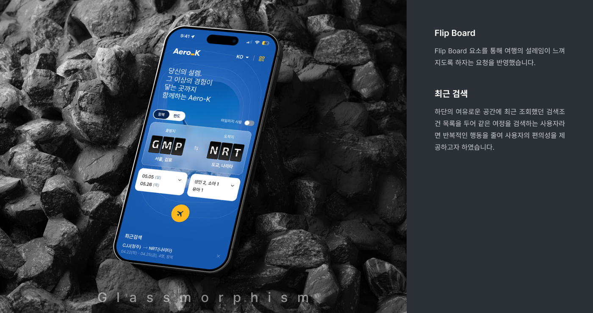
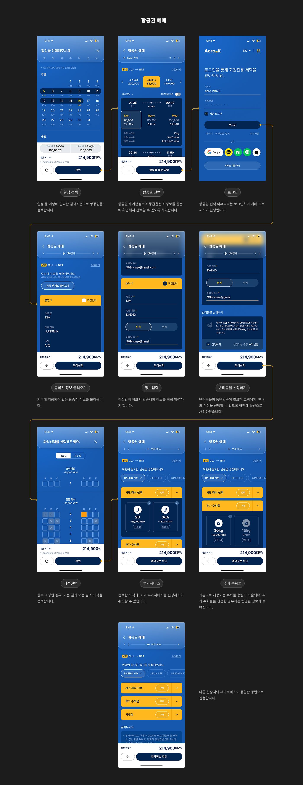
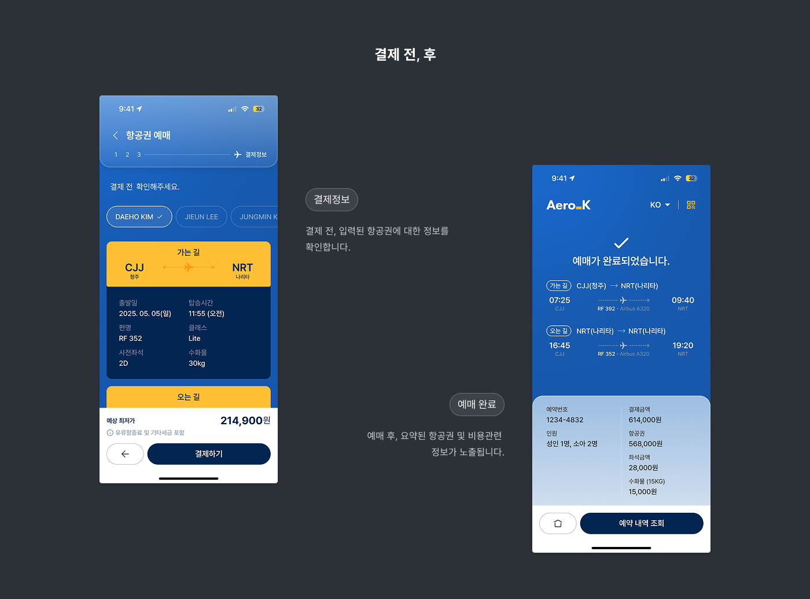

- 
- 
- 
Aero_K 항공, 예약앱 시안 - B
제안시안
시안B의 UI 디자인은 “여행의 설렘과 고급스러움”을 시각적으로 풀어내기 위해 글래스모피즘(Glassmorphism)을 중심으로 구성되었습니다.
디자인 전반에 걸쳐 비행기 창문을 연상시키는 곡선 요소와 시원한 색감, 그리고 투명한 유리 질감을 활용하여, 마치 비행 중 구름 위를 떠다니는 듯한 가벼움과 자유로움을 전달합니다.
"디지털 속에서 만나는 나만의 창공. 투명한 UI 너머로 펼쳐지는 여행의 설렘을 담았습니다."
 에어로케이
에어로케이- Product•RMS (항공 예약시스템)
- Date•2025. 4